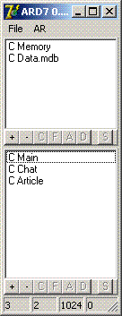
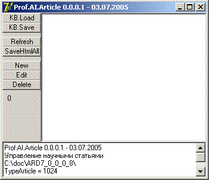

| Prof.AR → Сборки → Первая публичная версия |
|
|
Первая публичная версияПрограмма Искусственный разум. Версия 0.0.0.8. (AR 0.0.0.8)  Описание программыВ программе реализуется взаимодействие агентов и источников знаний.
Работа с программойПри открытии программы создаются два источника знаний и три агента.Источники знаний отображаются в верхнем списке. Агенты отображаются в нижнем списке. Агенты и источники сразу после открытия не антивизируются (не работают). Для активизации источника или агента нажмите кнопочку [A] (Activate). Для деактивации нажмите кнопку [D] (Deactivate). Двойное нажатие на элементе в списке агентов или источников открывает соответствующее окошко агента или источника. Назначения кнопок[+] - Произвести поиск и добавление (будет реализовано в следующей версии).[-] - Отключить и удалить агент/источник из списка [C] - (Create) - создать объект агента/источника внутри программы. (Пока не создан объект он не может быть активизирован) [F] - (Free) - Удалить объект агента/источника внутри программы. [A] - (Activate) - Активизировать агент/источник. (Агент начинает работать/К источнику можно обращаться) [D] - (Deactivate) - Деактивировать агент/источник. [S] - (Show) - Показать окошко агента/источника.  МенюВ главном меню есть два подменю: File и AR. Первое предназначено для работы с оболочкой, второе для управления Искуственным Разумом.Статусная строкаВ статусной строке показывается (по порядку):
|